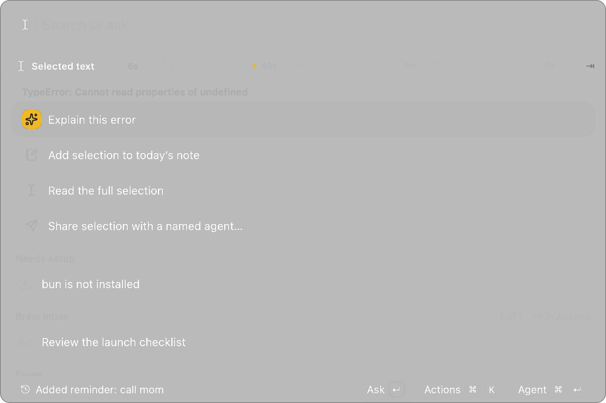
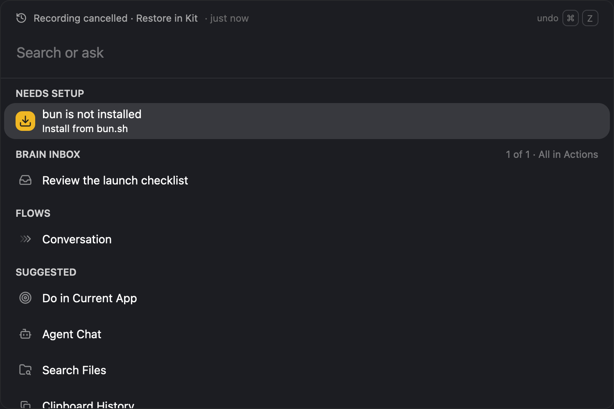
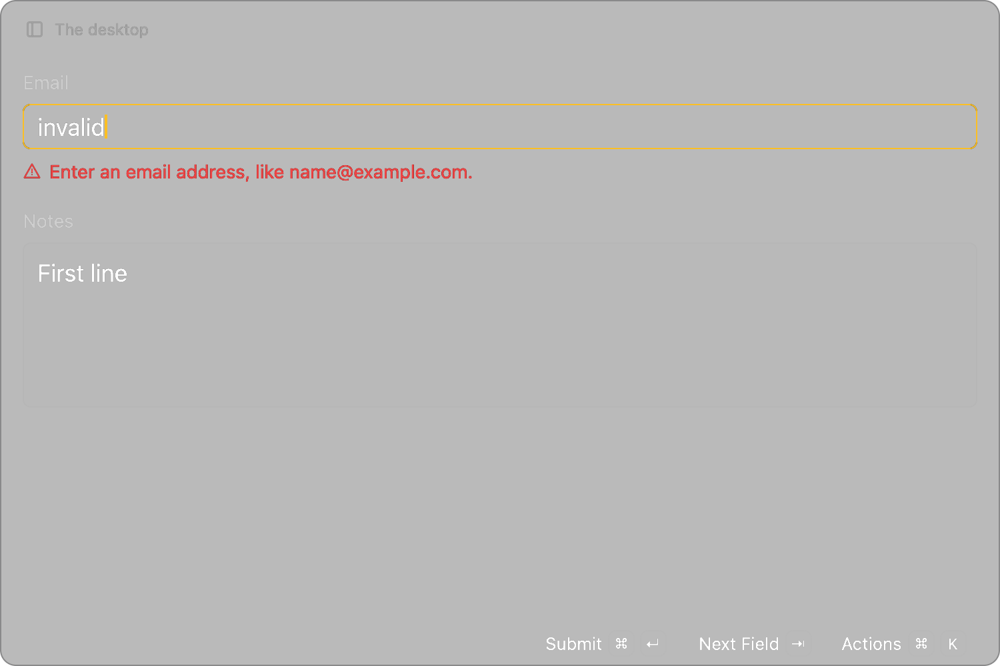
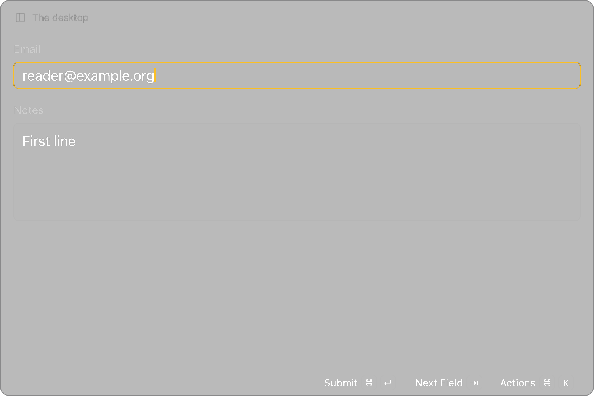
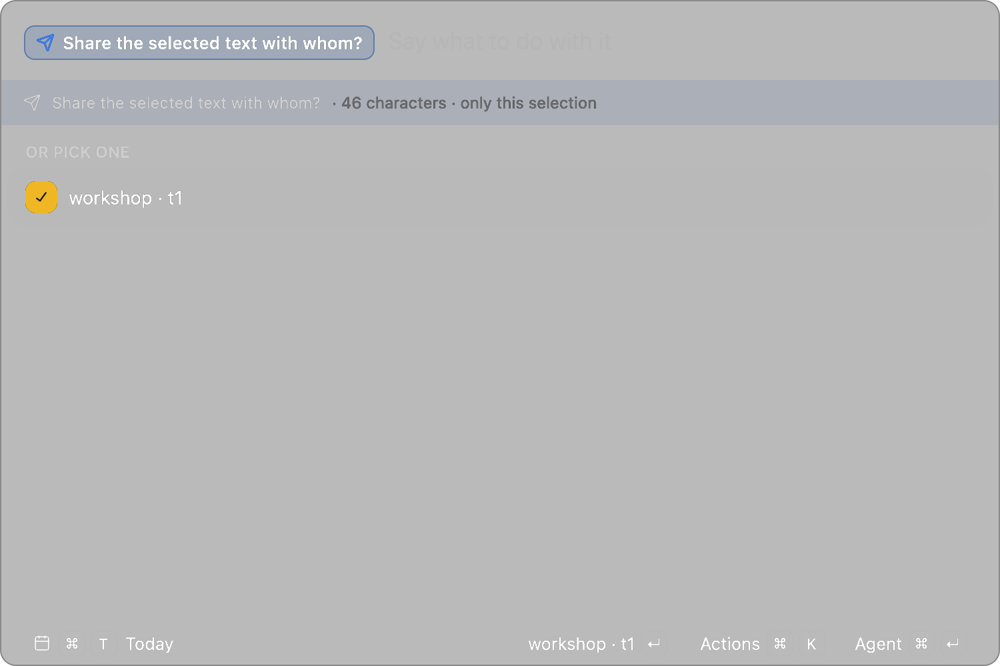

October 15–31, 2026
Start with what’s in front of you.
A selection, a copied link, the field you’re typing in. This month’s changes make it easier to tell Kit which one you mean.

Pick the subject before the action.
The tabs below the input can hold selected text, a recent copy, the front window and the last run. Each has its own action list. Switching tabs doesn’t run anything: you can read the full selection before deciding what to do with it.
- Tab ⇧ Tab
- Cycle subjects while the input is empty.
- ⌘ V ↑
- Select the copy, or walk back through past runs.
- Space
- Attach the chosen subject, then type what to do with it.
Looking for an open browser tab instead? Start typing its title. A matching tab can appear from the first character, even when commands and notes also match. Search includes Safari as well as supported Chromium browsers; it searches tab metadata, not page contents.
Let go to finish. Not to send.
Hold the main shortcut (default ⌘ ;) and speak. Kit remembers the field you started in. If it’s still safe to write there, releasing inserts the transcript. Saying “send this email” dictates those words; it doesn’t send the email.

- Change destination: press ⇧ Esc while listening to switch to editable Kit input. Plain Esc cancels before dispatch.
- Get a take back: with recording recovery enabled, cancelled takes stay private on-device for 24 hours. Open Recently Cancelled Dictations; if only audio survived, transcribe it before editing.
- Spell what’s on screen: visible Accessibility text can supply spelling and capitalization in the original window. Window OCR is a separate opt-in that requires Screen Recording permission.
Another way in Tap the main shortcut twice for Today. Hold the second press to dictate into the note. For a clean chat, use ⌘↵ in the empty launcher.
Your next keystroke fixes the error.
Suppose a script asks for an email and a few lines of notes. If the address is invalid, Submit puts the caret back in Email and shows an example there. The notes stay put. Correct the address and the warning clears without a second submission.


Return in a multiline field inserts a newline. ⌘ ↵ and the Submit button deliver the same values once; Esc cancels. SDK forms return values by name and fields() keeps them in order.
Share a passage with one agent.
Select some text, choose Share selection with a named agent…, then pick a registered local Herdr terminal. Kit freezes the passage and gives you eight seconds to stop the share. A reply waits in Agent Handoffs as editable Markdown; it doesn’t take focus, run a command or paste into your work.

From an existing agent conversation: an operator can grant permission to save a quiet Markdown note or run one reviewed revision of a personal command. A notes grant isn’t clipboard access; a changed command needs a new review. These grants limit Kit’s API, not what an unrestricted shell can do.
The rest of the update
Also in October
- Files & exports
- File actions avoid overwriting an existing name. On a supported native Save or Export sheet, the optional filename helper lets you preview a quoted name, fill the field and leave Save untouched. It needs Accessibility permission; it is not a general desktop controller.
- Notes & clipboard
- Notes and Today share a Markdown editor. Follow a note link, check word counts or copy the text as Markdown, HTML or plain text. Clipboard history distinguishes links, colors and file paths so their actions fit what you copied.
- Chat & capture
- Chat can use configured MCP servers and ask before making changes. A deliberate window handoff can include the app, title, selection and a screenshot; opening a clean chat does not attach the highlighted result.
- Windows & webcam
- Move windows in fourths or sixths, step their size up or down, or restore a previous arrangement. The webcam prompt has a countdown and a review step before you keep the photo.
- Under the hood
- The one-window interface now runs on the newer GPUI and gpui-kit components. Dictation uses Metal with a CPU fallback; transcription models are downloaded separately.
Screenshots show Script Kit’s renderer with sample text, not a personal desktop. Native permissions, microphone capture and delivery into another app depend on the Mac and application involved.